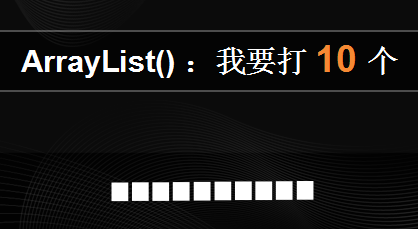
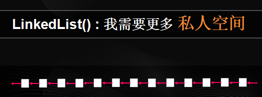

· 这不是引子
我在本篇中要讲的内容，其实很多都可以在Java的官方API文档中查到。我只是挑了常用的一部份，糅合我个人的实际经验做说明。而说明中的所有实例都是用了原生态的代码、或伪代码，目的是为了更纯粹地表现思想，万莫过于关注语法等次要信息。
另外可能有些小猿对看完下面的内容后会不屑一顾，觉得为了一点点的性能而这样写代码太抠门了。所谓“不积跬步无以至千里，不积小流无以成大海”，性能最好的代码往往都是抠出来的。
· 女神都是吃货
Java是什么？
Java被使用了十几年，她早已不再是一种纯粹的编程语言。
我估计现在在森林里随便捡只猿，不认识Java的都属于珍贵品种了。时到如今，Java早已成为漫山遍野程序猿心中白手兴家的首选女神。而如同其他的女神一样，Java也毫不留情地升级了她们的共同技能：吃。
Java乱吃内存、CPU的行为，早已是每个程序猿痛心疾首的回忆，大家对她是爱而生畏、追不得又舍不得——毕竟“小吃怡情，大吃致贫，吃饱还吃真要命”啊。为此我们就必须从源头上约束女神的吃货行为——虽然对待女神不能像秋风扫落叶，但也不能太纵容了。
· 不要轻易触碰女神的底线
ArrayList是最广为人知的Java女神之一。但我发现一个奇怪的现象，很多人跟这位女神约会的时候都不约定日期，所以经常会看到这样的代码：
List arrayList = new ArrayList();这样用写代码什么问题？你没有约定数组的长度！
ArrayList如字面意思，就是数组列表。要知道，数组是一段 定长 的连续空间，实际上ArrayList就是数组的包装类。在默认情况下，ArrayList只是战斗力只有10的渣渣：

所以当我们一旦给她多于10个对象，ArrayList肯定吃不完。凭着ArrayList直率的性格，吃不完，就会直接兜着走：她会马上申请一个原长1.5倍的数组，然后把旧数据尽数复制过去。
这就是ArrayList的 自动扩容 机制。从扩容行为可以知道，在扩容的瞬间会吃掉大量的内存空间、同时带来不必要的性能消耗，而且随着ArrayList长度的增长，副作用就越明显。
其实ArrayList女神是非常矜持的，如果你不想触碰女神的底线，那么与她约会时，即使不能有确切的日期，也应该告诉她大概的时间。所以你完全可以这样做：
List arrayList = new ArrayList(size);· 你倾慕的女神不一定是你需要的
慢慢地开始有小猿觉得ArrayList令人太心烦，于是选择了另一个女神LinkedList。LinkedList女神非常开放，只要想见就可以见：
List linkList = new LinkedList();LinkedList如字面意思，就是链表列表。链表就是一个 不定长 的不连续空间。因此在使用LinkedList的时候，无需担心自动扩容的问题。
但事实却并非如此，因为我发现了更严重的问题，有很多这样的代码：
linkList.get(i);这样用写代码什么问题？你在对一个链表做随机访问！
LinkedList女神拥有非常多的秘密，你如果经常对她问这问那，她就必需从头到尾理清自己的思绪才能告诉你答案。长久下去你们之间的距离就会越来越远，因为你问的每个问题她都需要考虑n秒才能决定。

相比之下，ArrayList女神就纯情得多，你可以随时问她任何问题，她都会在1秒内回答。所以，只有当你确定自己不会随便发问的时候，才考虑LinkedList;如果想舒舒服服过日子，还是ArrayList更适合你。不然把O(1)的时间复杂度变成O(n)，实在是得不偿失。
· 不要试图改变女神的想法
所谓“女神心，海底针”，即使你认为你有多了解你的女神，都不要试图改变她的想法。因为你越是觉得了解她，其实就说明你越不了解她。ArrayList女神就是一个很好的例子，我看到过这样的代码：
for (int i = 0; i < arrayList.size(); i++) {
arrayList.remove(i);
}这样写代码有什么问题？且不论游标错位和索引溢出的问题，你在破坏数组的连续性！
ArrayList为了保证数组连续性，会把删除元素位置后的全部对象前移，这时删除一个元素最坏的时间复杂度是O(n)。而且在访问数组的同时做删除操作，必然会导致游标错位、读取了期望以外的数据，甚至会抛出指针溢出异常。
但总有一些自我主义的人喜欢孜孜不倦地实现女神改造计划，于是乎我又看到了这种代码：
List cloneArrayList = new ArrayList();
cloneArrayList.addAll(arrayList);
for (int i = 0; i < cloneArrayList.size(); i++) {
Object o = cloneArrayList.get(i);
arrayList.remove(o);
}真是no zuo no die。我承认这段代码的功能没有问题，但在性能方面没有任何可取之处。这段代码非常成功地保证了在O(n^2)的时间复杂度前提下，还能用addAll多浪费了一倍的内存，而目的仅仅只是为了解决游标异常。
其实你完全可以这样做：
for (Iterator it = arrayList.iterator(); it.hasNext(); ) {
it.remove();
}或者是这样做：
for (int i = arrayList.size() - 1; i >=0; i--) {
arrayList.remove(i);
}这两种做法都没有浪费多余的内存。前者使用了迭代器Iteartor，Java构造迭代器的代价是非常低的，而在迭代器执行删除操作的代价就更低了，因为它只需要维护元素之间的指针。而后者虽然没有用迭代器，却保证了最少限度的元素前移。
所以，如果你不希望你的女神变成“女神经”，就应该打消强势去改变她的想法，这是愚蠢的行为。不妨试试旁敲侧击、或逆向思维的做法，或者你会收获女神对你的认同感。
· 切忌对女神的体重感到好奇
经过前面几轮的深入发展，一些小猿已经可以开始和女神讨论一些敏感的问题了——体重。在Java中，每一个List女神都自带了一个体重仪size()。
但似乎失忆总是女神的专利——她们几乎都会故意忘记自己的体重。所以无论你问了她多少次，都只能费力地帮她回想刚刚吃了什么，借此进行体重推演。于是长久下来，不能循环地问女神的体重基本已成为一个共识，因为每次的时间复杂度都是O(n)。
但是如果你和女神独处在单线程环境下，不妨在她add或remove的时候顺手做一下小抄，这样就可以快速知道女神的实时体重了：
public class MyList {
public void add(Object o) {
list.add(o);
cnt++;
}
public void remove(Object o) {
list.remove(o);
cnt--;
}
public int getSize() {
return cnt;
}
}但在多线程环境下就尽量不要这样做了，因为所有的女神都不会喜欢自己的体重在公众环境下过于明码实价。虽然你可以利用同步synchronized做掩饰，使你做小抄的行为更安全隐秘，但这样会浪费太多时间在add和remove上面，发反而得不偿失。
· 女神不需要被过度保护
我常常在多线程环境下看到很多synchronized，虽说目的是对代码做同步保护，但不少的同步都有点多余。确实我们都希望可以在各种环境下保护女神不受伤害，但任何事物一旦过度只会适得其反。
同步块会让代码在多线程环境中更安全，但似乎甚少人会去考虑同步的代价。姑且不论同步不当带来的死锁问题，同步所带来的性能下降至少是100倍。因为同步所牺牲的成本并不是CPU获取锁时花费的时间，而是失去了并行机会——为了在内存得到一致的值，所有线程不能不停下来等待一条线程完成工作，这是极大的浪费。
当女神被过度保护起来之后，她无论做什么都只能先征求一下你的意见，做事效率则自然低下。举一个常见的栗子，单例模式：
public class SingleCase {
public synchronized SingleCase getInstn() {
if (instance == null) {
instance = new SingleCase();
return instance;
}
}
}这样写代码有什么问题？过度同步！
单例的一个特点就是，它的方法都要先获取单例对象才能调用。而获取单例的方法被这样写，就无异于其他方法都被被强制同步，调用性能大打折扣。
而事实上，单例模式只需要在初始化时同步，其他方法一般都无需同步。我们完全可以这样重构代码：
public class SingleCase {
public SingleCase getInstn() {
if (instance == null) {
synchronized (SingleCase.class) {
if (instance == null) {
instance = new SingleCase();
}
return instance;
}
}
}
}在这段代码中，对单例instance做了两次null判断。其中，在synchronized内部的null判断，是为了保证单例不要被重复初始化。而在外部的null判断则限制了同步只在初始化时发生，从而避免了过度同步。
· 不要总盯着女神的缺点
try catch 是Java常用的异常捕获手段，如果我们知道代码在某些情况下会发生异常，率先将其捕获则可增强代码的容错率。
但有些小猿似乎对异常捕获情有独钟，不管三七滥用 try catch 。虽说有缺点的女神才是完美的，但我们不能总盯着女神的缺点看，这只会让她感到厌烦。如这样的代码：
try {
i = 0;
while(true) {
System.out.println(arrayList.get(i++));
}
} catch (ArrayIndexOutOfBoundsException e) {
// TODO
}且不论这段代码的对错，我先解释一下它的用意：一般在遍历一个数组元素时，都会先获取数组长度size，然后定义一个自增索引，每遍历一个元素则与size比较一次是否越界。而ArrayLits的get方法本身也有一个越界检查，这段代码就是为了不重复做越界检查，利用get抛出的越界异常终止遍历。
乍一看视乎是高端大气上档次的优化代码，而事实上，这段代码没有任何可取之处，它至少犯了3个认知错误：
- ① 条件判断几乎不花时间，这种优化没必要；
- ② try catch内部的代码不会被编译器优化，这种做法得不偿失；
- ③ 违反了异常逻辑只能用于异常处理的原则。
第①点就不解释了。至于第②点，编译器在编译代码时，会做一些特定优化（如去掉冗余代码），而try catch需要确切知道哪一行代码出现了问题，在编译时自然不会优化代码，在这里牺牲的代价是沉重的。
而第③是原则性的问题，可以用正常逻辑判断的，就不要让异常发生，甚至不要刻意去制造异常。
· 饥不择食是大忌
编码的时候，在每个关键点做日志输出是很普遍且必要的事。但往往输出日志只是打印一行字符串，久而久之其输出效率就会被忽视。
在实际场景中，一行日志的信息量可能非常大，而其信息源通常又来自于不同的字符串，于是每个日志输出的地方都有大量的字符串拼接。而其中最方便的拼接方式“+”出现频率最高。
要知道，字符串String的本质就是定长的字符数组，它的内容一旦被初始化就无法被修改。而连接符“+”不是通过修改String的内容实现拼接的，它的原理类似于ArrayList的自动扩容，而每一次拼接操作的时间复杂度都是O(n^2)，效率极其低下。
其实如果拼接量不多，使用“+”也无妨。而若有大量拼接操作的情况下，应优先考虑StringBuffer或StringBuilder。StringBuffer是多线程安全的，而StringBuilder虽多线程不安全，但性能比StringBuffer要高。
String有方便性、StringBuffer有安全性、StringBuilder有高效性，三位女神各有所长，应据实谨慎选择，无谓图一时方便而饥不择食，总是滥用String的拼接只会给日志器带来额外的负担。
· 双子女神
在Java里面有一位双子女神HashMap，她糅合了ArrayList和LinkedList两位女神的特点，是一本用于快速查找的KV字典。然而实际上，我看见很多人所使用的都是低效的HashMap，类似这样的代码简直是屡见不鲜：
Map map = new HashMap()这样写代码有什么问题？首先需要了解HashMap的数据结构。
HashMap的核心结构是散列表数组。又由于她使用了链地址法解决地址冲突，因此散列表的每一个元素都是链头，每个链头下挂载了所有地址冲突元素的链表。整体的数据结构类似于十字链表。
从HashMap的数据结构可知，作为数组的散列表同样存在ArrayList的自动扩容特性，因此约定长度以避免自动扩容就很必要了：
Map map = new HashMap(size)但只是这样做还远未达到高效的效果。HashMap的检索效率取决于散列表的利用率、以及冲突链表的长度。这需要保证把KV对放入散列表的每个位置的概率都相等，这时散列表空间利用率最高、地址冲突率最低（冲突链表最短）。
一般情况下可通过key对散列表长度求模计算散列地址，实现概率均等。但Java认为求模操作过于消耗性能，采用了与运算代替之：
- 求模法：
add_val_mod = key % size - 与运算：
add_val_java = key & (size - 1)
但与运算法有一个明显的缺点，它无法等概率计算出散列表的各个地址值，除非散列表的长度为2^n。所以最高效的HashMap使用方法应该是这样：
Map map = new HashMap(2^n)· 欲速不达，欲擒先纵
其实追求女神不难，难在有效率。但有些时候高效却不一定是最好的。
例如要求删除硬盘上的10000个文件，最高效的方法就是一次性删除。但这未必是最好的方法——我在win7上删除大量文件的时候，有时中途点了取消，却长时间无法取消删除，win7依然专注地删除文件。
从这个层面看，一次性删除是最高效的，但同时给用户的感觉却是最差。如果把删除任务进行分片，每删1000个文件检查一次用户是否点了取消按钮，用户的感知就会改善。
同样地，当我们专注于高效地追求女神的时候，可能会忽略了一些细节。所谓欲速则不达，有时放缓一下脚步，不追得太紧，未免就是一件坏事。
追求女神，任重而道远（啊）。